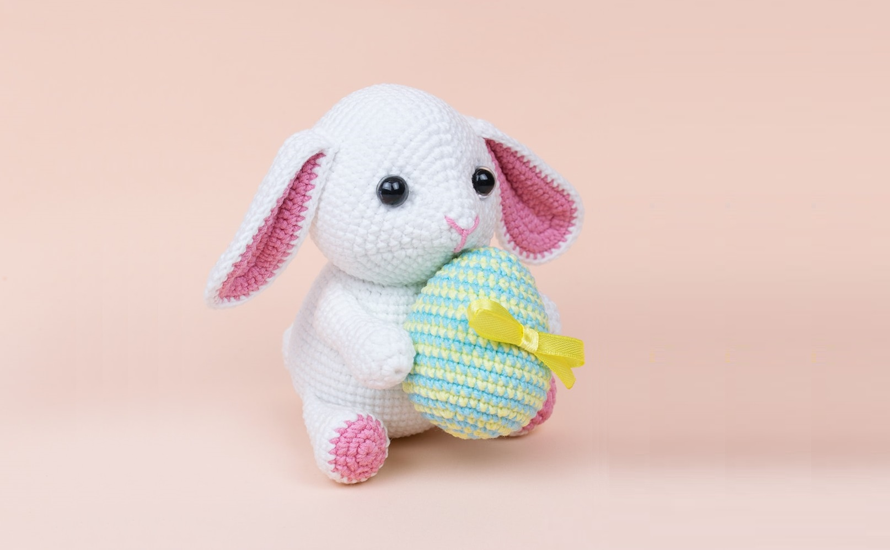

Bunny Amigurumi Pattern
Make Easter a little more magical with this cute lop-eared amigurumi bunny! Perfect for people who are fond of bunnies!
Crochet it today with our step-by-step Bunny Amigurumi Pattern!
Materials:
- 4 ply yarn
- 2.5 mm crochet hook
- 10 mm safety eyes
- Fiberfill
- Sewing needle and scissors
Abbreviations:
ch = chain
st = stitch
sc = single crochet
inc = increase (2 sc in 1 st)
dec = decrease (2 sc together)
sl st = slip stitch
dc = double crochet
tr = treble crochet
(..) = repeat the instructions in brackets based on the given no. of times
[..] = total number of stitches
Head:
Crochet with yellow yarn.
Rnd 1: sc x6 in magic ring [6]
Rnd 2: (inc) x6 [12]
Rnd 3: (sc, inc) x6 [18]
Rnd 4: (sc x5, inc) x3 [21]
Rnd 5: (sc x6, inc) x3 [24]
Rnd 6: (sc x6, inc, inc) x3 [30]
Rnd 7: (sc x8, inc, inc) x6 [36]
Rnd 8: (sc x10, inc, inc) x3 [42]
Rnd 9: (sc x12, inc, inc) x3 [48]
Rnd 10: (sc x14, inc, inc) x3 [54]
Rnd 11: (sc x8, inc) x6 [60]
Rnd 12-16: sc x60 [60]
Insert safety eyes between Rnd 9 and Rnd 10 equidistant from increases.
Rnd 17-21: sc x60 [60]
Rnd 22: (sc x8, dec) x6 [54]
Rnd 23: (sc x7, dec) x6 [48]
Rnd 24: (sc x6, dec) x6 [42]
Rnd 25: (sc x5, dec) x6 [36]
Rnd 26: (sc x4, dec) x6 [30]
Rnd 27: (sc x3, dec) x6 [24]
Stuff.
Rnd 28: (sc x2, dec) x6 [18]
Rnd 29: (sc, dec) x6 [12]
Rnd 30: dec x6 [6]
Fasten off leaving a small tail. Weave in the yarn in front loops of the rest 6 stitches, then pull to close the hole. Hide the end.
Making eye indents:
Insert the needle with white yarn between Rnd 16 and Rnd 17 (neck area) and draw it out at the eye. Step aside a little bit (to seize the stitch) and insert the needle, then draw it out at the beginning point. Pull slightly and fasten off. Repeat the same steps for the second eye indent.
Body:
Work with white yarn.
Rnd 1: sc x6 in magic ring [6]
Rnd 2: inc x6 [12]
Rnd 3: (sc, inc) x6 [18]
Rnd 4: (sc x2, inc) x6 [24]
Rnd 5: (sc x3, inc) x6 [30]
Rnd 6: (sc x4, inc) x6 [36]
Rnd 7: (sc x5, inc) x6 [42]
Rnd 8: (sc x6, inc) x6 [48]
Rnd 9: (sc x7, inc) x6 [54]
Rnd 10: sc x54 [54]
Rnd 11: (sc x8, inc) x6 [60]
Rnd 12-15: sc x60 [60]
Rnd 16: (sc x8, dec) x6 [54]
Rnd 17-18: sc x54 [54]
Rnd 19: (sc x7, dec) x6 [48]
Rnd 20-21: sc x48 [48]
Rnd 22: (sc x6, dec) x6 [42]
Rnd 23: sc x42 [42]
Rnd 24: (sc x5, dec) x6 [36]
Rnd 25: sc x36 [36]
Rnd 26: (sc x4, dec) x6 [30]
Fasten off leaving a tail for sewing. Stuff.
Arms (make 2):
Crochet with white yarn.
Rnd 1: sc x6 in magic ring [6]
Rnd 2: inc x6 [12]
Rnd 3: (sc x2, inc) [16]
Rnd 4-5: sc x16 [16]
Rnd 6: (sc x6, dec) x2 [14]
Rnd 7: (sc x5, dec) x2 [12]
Rnd 8-14: sc x12 [12]
Rnd 15: (sc x4, dec) x2 [10]
Stuff the half of the arm with fiberfill. Flatten the edges, crochet sc in next 5 st through both layers, closing the hole. Fasten off leaving a tail for sewing.
Legs (make 2):
Begin with pink yarn.
Rnd 1: sc x6 in magic ring [6]
Rnd 2: inc x6 [12]
Rnd 3: (sc, inc) x6 [18]
Change to white yarn.
Rnd 4: (sc x5, inc) x3 [21]
Rnd 5-6: sc x21 [21]
Rnd 7: sc x6, dec x4, sc x7 [17]
Rnd 8: sc x7, dec, sc x8 [16]
Rnd 9-10: sc x16 [16]
Rnd 11: (sc x6, dec) x2 [14]
Rnd 12-13: sc x14 [14]
Rnd 14: (sc x5, dec) x2 [12]
Stuff with fiberfill. Flatten the edges, crochet sc in next 6 st through both layers, closing the hole. Fasten off leaving a tail for sewing.
Ears:
Inner ears (make 2):
Crochet 15 ch with pink yarn. Turn and continue working, beginning from the 2nd ch from your hook.
Row 1: sc x13, sc x5, turn, sc x13 [31]
Row 2: 1 turning ch (counted as 1 st), sc x12, inc x5, sc x13 [36]
Row 3: 1 turning ch (counted as 1 st), sc x12, (sc, inc) x5, sc x13 [41]
Row 4: 1 turning ch (counted as 1 st), sc x40 [41]
Fasten off and weave in the end.
Outer ears (make 2):
Crochet 15 ch with white yarn. Turn and continue working, beginning from the 2nd ch from your hook.
Row 1: sc x13, sc x5, turn, sc x13 [31]
Row 2: 1 turning ch (counted as 1 st), sc x12, inc x5, sc x13 [36]
Row 3: 1 turning ch (counted as 1 st), sc x12, (sc, inc) x5, sc x13 [41]
Row 4: 1 turning ch (counted as 1 st), sc x40 [41]
Pull the inner ear and the outer ear (wrong side to wrong side) and crochet through the stitches of both parts:
Row 5: sc x41 [41]
Fasten off leaving a tail for sewing.
Tail:
Work with white yarn.
Rnd 1: sc x6 in magic ring [6]
Rnd 2: inc x6 [12]
Rnd 3: (sc, inc) x6 [18]
Rnd 4: (sc x5, inc) x3 [21]
Rnd 5-6: sc x21 [21]
Rnd 7: (sc x5, dec) x6 [18]
Rnd 8: (sc, dec) x6 [12]
Rnd 9: dec x6 [6]
Fasten off leaving a tail for sewing.
Assembly:
- Sew the head to the body.
- Sew the legs to the body at Rnds 7-11.
- Sew the arms to the body at Rnds 21-24.
- Sew the tail to the body at Rnd 10.
- Sew the ears to the head at Rnds 17-20.
- Embroider a nose with pink yarn.
- Tie a bow on the egg with satin ribbon. Sew the egg to the arms.
Great job! Your bunny amigurumi is done! Happy Easter! Share your finished work and tag us in Instagram!